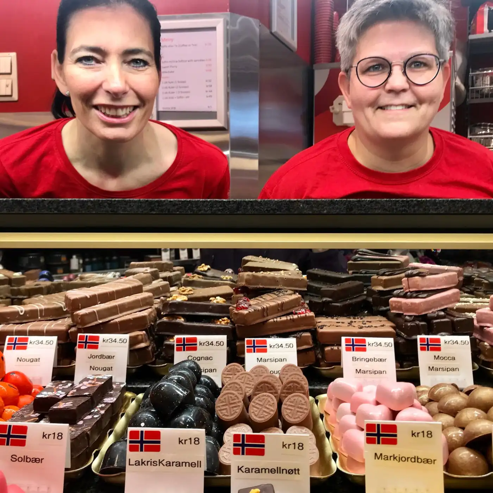

Forside / Om oss
Om Sweet Heart
En verden av godteri i hjertet av Tromsø sentrum — siden dørene først åpnet i oktober 1984.
Historien
Fire tiår i Storgata
Sweet Heart har vært en skattekiste av søtsaker og smaksopplevelser siden 1984. Butikken ligger i Storgata 71, midt i Tromsø sentrum, og er åpen alle dager i uka.
Vi plukker konfekt for hånd, fyller disken med smågodt og tar imot bestillinger på esker og poser til anledninger.
- Etablert oktober 1984
- Storgata 71, 9008 Tromsø
- Åpent alle dager

Åpningstider
Vi er åpne alle dager
Kom innom i Storgata 71, eller ring på +47 95 40 66 05.
Man–ons 09.00–18.00 · Tor 09.00–19.00 · Fre 09.00–18.00 · Lør 10.00–17.00 · Søn 12.00–18.00
Søndagsåpent hele året, med unntak av enkelte høytidsdager.
Kom innom!
Storgata 71, 9008 Tromsø — midt i sentrum.